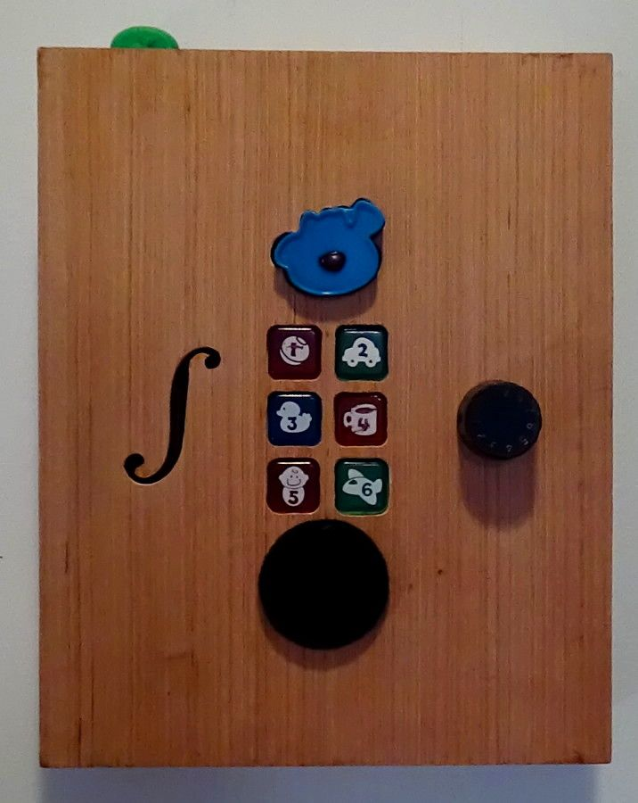
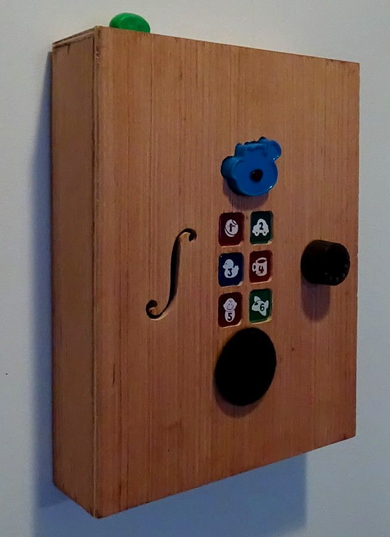
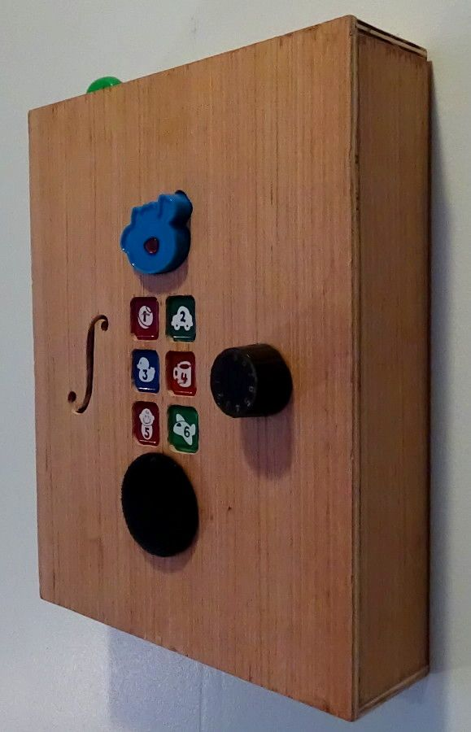
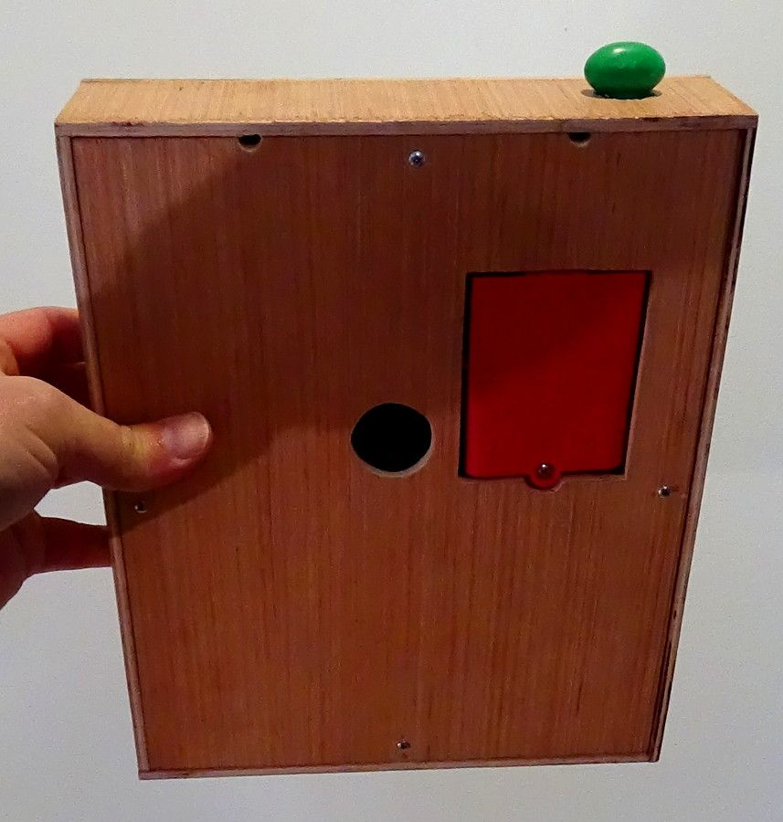
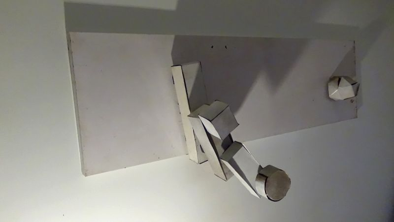
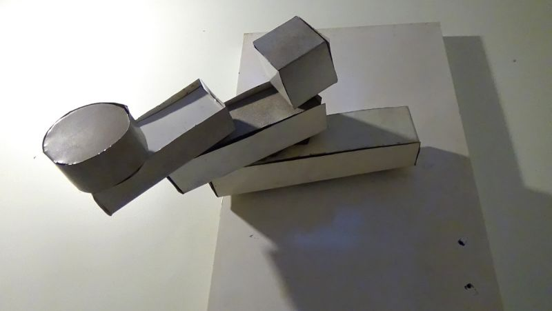
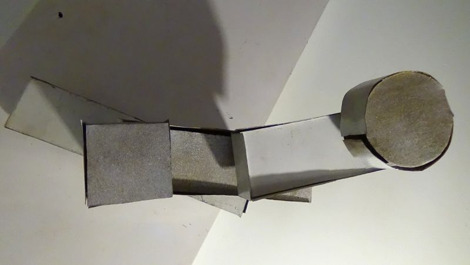
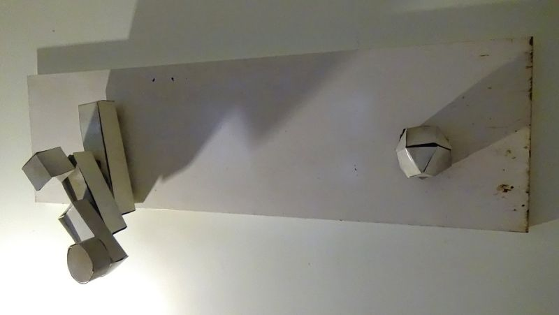
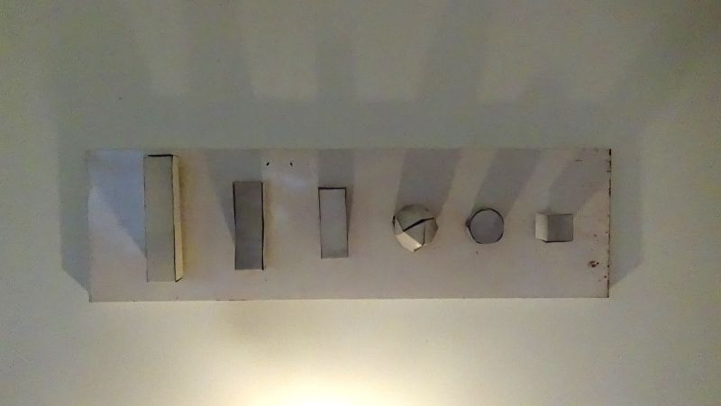
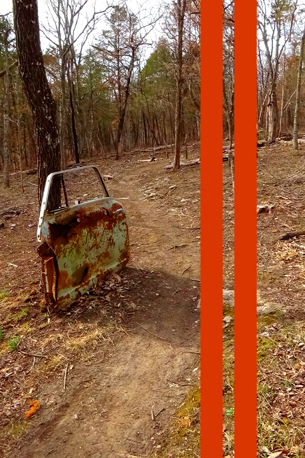

MUSIC CONTINUES TO BE INSTRUMENTAL IN MY DEVELOPMENT. SOUNDS HELP TO INFLUENCE AND SHAPE MY IDENTITY. THE ABILITY TO LISTEN TO BOTH THE REGULAR AND IRREGULAR FORMS IS UNIQUE. BEING ABLE TO PAY ATTENTION TO THE MOVEMENTS CREATED BETWEEN THE MIND/BODY + SPACE/TIME AS THEY MIX, TOGETHER IS EVEN MORE INTERESTING. IT IS ENTERTAINING TO HEAR AS THEY ALL COMPETE TO HELP REFINE VISUALS TO REFLECT ON. ATTEMPTING TO FIND THE SOURCES OF ACTION AND REACTION, UNDERSTANDING THESE THOUGHTS AND HOW THEY PRODUCE AN EVER-CHANGING FORM OF ENERGY IS CONTINUOUS. I ROUTINELY SEE NEW WAYS TO CONCENTRATE ON THE MOST IMPORTANT PARTS, HOW THEY WORK TOGETHER, AND FREQUENTLY SEARCH FOR ORIGINAL CONCEPTS OF MENTAL GRATIFICATION FOR ENJOYMENT.
INTERNET LOUNGE

THE vGallerySpace IS BEGINNING TO TAKE SHAPE AND CONTINUES TO EVOLVE. THE CONCEPT IS BASICALLY AN ATTEMPT AT RECREATING THE IDEA OF A LOUNGE ONLINE AS AN ADDITION TO THE GALLERY + OFFICE/STUDIO. AT THE MOMENT, I AM WORKING TO UNDERSTAND ALL THE COMPONENTS AND HOW IT COULD FUNCTION IN AN INTERNET SETTING. THE PRIVATE STREAM WAS AN ICECAST SERVER BUILT WITH THE ABILITY TO EITHER MIX OR PLAY LIVE MUSIC (NOW A SPOTIFTY PLAYLIST OF MY FAVORITES). IT'S NOT ABOUT THE NUMBER OF LISTENERS, IT IS MORE ABOUT THE EXPERIENCE ONE FINDS IN A COMFORTABLE ENVIRONMENT. A PLACE TO REFLECT AND THINK ABOUT THE WORK. THIS EXHIBITION THERE IS A MIX OF A MIDBROW ART STYLE WITH SOME RARE GROOVES FROM 1980-1989 FOR THE OPENING NIGHT, IT IS HIT OR MISS AFTER THAT. STAY TUNED FOR UPCOMING EVENTS!

1999 MATTEL FISHER-PRICE MODEL #71654.

BILINGUAL BABY CELL PHONE IN WOODEN BOX WITH VOLUME CONTROL. WOOD IS LAMINATED OAK, SOME PARTS ARE CHIPPED ALMOST WORN LOOKING, BUT ADDS MORE CHARACTER. WHEN THE BUTTON IS ADJUSTED THE SOUND BECOMES UNIDENTIFIABLE, AND DIFFICULT TO DRAW INFERENCES ON WHAT IT MIGHT BE.

THERE ARE MANY KINDS OF SOUNDS AND NEW ONES CREATED EVERY SINGLE DAY. IT IS SIMPLY IMPOSSIBLE TO LISTEN TO THEM ALL IN ONE LIFETIME. BEING ORIGINAL IS THE MOST SOUGHT-AFTER SOUND. THIS SEARCH FOR THE HIDDEN SOUNDS, NOT YET DISCOVERED, HAS BROUGHT ME TO THE DEVELOPMENT OF SOUND SCULPTURES AND LEARNING THE DIMENSION OF SOUND. TO VIEW THE EXTREMES OF MUSICAL NOISE AND HOW THEY RELATE TO THE ORGANIC SOUNDS FOUND IN WOODEN INSTRUMENTS MIX CONCEPTS IN WAYS NEVER THOUGHT OF BEFORE. I WONDERED AT ONE POINT IF THE UNIVERSE WILL EVER RUN OUT OF SOUNDS AND NOW REALIZE THERE IS JUST NO WAY IT CAN EVER HAPPEN.

A NUMBER OF FUNCTIONS AND FEATURES ACCESSIBLE THROUGH THE BACK. IT HAS TWO DIFFERENT RING TONES AND SETTINGS FOR ENGLISH OR SPANISH.
MADE FROM AN OLD METAL CABINET ORIGINALLY USED TO STORE LAWN AND GARDEN SUPPLIES. THERE MAY BE SOME RESIDUE ON THE INTERIOR OF THE PIECES, BUT IT WAS CLEANED THOROUGHLY WITH A POWER WASHER. THE EXTERIOR IS DIRTY WHITE AND COULD EASILY BE PAINTED TO YOUR LIKING IF YOU WANT ALTHOUGH I LIKE IT PLAIN. THE SHAPES WERE CUT USING NET PATTERNS. W 62″ X H 18″ AND SITS 16″ FROM THE WALL. IF YOU NEED FURTHER DIMENSIONS FOR EACH PORTION, PLEASE LET ME KNOW. IT IS SURROUNDED BY SNOWFLAKES IN CASE YOU WERE WONDERING.
THE MUSIC IS PROVIDED BY MK2, AND THE SONG IS TITLED THE DARKNESS. THE PROGRAM WAS CREATED WITH A VJ PROGRAM CALLED GLMIXER AND SOME ADDITIONAL PLUGINS.

CAN BE FOUND BY VISITING THE arch>scul blog OR PAST EXHIBITION. THERE IS ALSO AN ADDITIONAL SHAPE ADDED IN THE FORM OF AN ICOSAHEDRA REPRESENTING A GUEST HOUSE.

THIS PIECE IS VERY ROUGH AND UNFINISHED, BUT IT STILL MAKES FOR AN INTERESTING HAND. THE SIX PARTS CAN BE ARRANGED WITH MAGNETS TO WHATEVER POSITION YOU DESIRE ON THE METAL CANVAS. MANY DIFFERENT CONFIGURATIONS ARE POSSIBLE, SO IT IS UNIQUE IN THAT ONE FRAGMENT OF ART BECOMES MANY. IT SHOULD NOT GET TIRESOME OVER TIME. FOR NOW, IT IS MAINLY BEING USED AS A PROTOTYPE FOR STUDY.




COLOR SUNDAY DRIVER VERTICAL WITH ORANGE RACING STRIPES. THE BACK IS ALSO SHOWN TO THE BOTTOM LEFT IN MORE VIEWS. THE PIECE WAS A PROTOTYPE MADE FOR THE AUTO NATURE EXHIBITION. THIS ONE HAS BEEN PAINTED WITH AN ORANGE STRIP AND SHOWN IN COLOR.
CLOSING STATEMENT
COMPREHENSIBLY UNDERSTANDING THE DIMENSION OF SOUND WITHIN A VIRTUAL ENVIRONMENT MAY HAVE BEEN A BIT TOO GREAT OF AN EXPECTATION TO WALK AWAY WITH AFTER SEEING THE EXHIBITION. THERE WERE MANY COMPONENTS FROM A VIRTUAL ART WALL, PRIVATE LIVE STREAMING RADIO, VJ LOOPS, AND A SOUND SCULPTURE IN A CAFE SETTING. MY MAIN OBJECTIVE WAS TO SHOW THE MIX OF THESE IDEAS AND PRESENT THE CONCEPT OF SOUND ALSO AS SCULPTURE IN SOME WAY TO DISPLAY THIS EXISTENCE BETWEEN NATURE AND THE MECHANICAL SPHERES. FROM THE ANCIENT TO THE FUTURISTIC, THESE LINES OF FORCE EXIST PRODUCING THOUGHTS THAT HELP WITH NURTURING US IN OUR DAILY LIVES.
I HAVE OFTEN WONDERED ABOUT MIXING ARTWORK WITH MUSIC. THERE SEEMS TO BE A REAL DISCONNECT BETWEEN THE TWO. ONE EITHER COMPETES WITH THE OTHER OR IS COMPLETELY SEPARATED FROM THE OTHER. ONLY A FEW TIMES HAVE I SEEN IT WORK TOGETHER. TRYING TO UNDERSTAND THINKING IN A VIRTUAL ENVIRONMENT WAS A GOOD LEARNING GROUND. TO TAKE APART SOME OF THE CREATIVE I ALREADY PRODUCED, FROM PREVIOUS EXHIBITS AND HAVE A CHANCE TO REVIEW ALL THE WORK, THEN ATTEMPT TO PUT IT BACK TOGETHER AGAIN FOR SOMETHING NEW WAS JUST WHAT I NEEDED.
THE HUMAN RELATIONSHIP WITH MUSIC IS SO EXTRAORDINARY. IT IS AS IF THE BODY ITSELF CAN BE AN INSTRUMENT. MUCH OF OUR LIVES HAVE BEEN INFLUENCED BY SONGS, LYRICS, RHYTHMS, AND EVENTS. ALL OF THIS HELPS TO SHAPE OUR EDUCATION, OPINION, AND EXPRESSION. THE MAIN STORYLINE IS OF TRENDS AND HOW THESE MOMENTS EVOLVE THE SCENE. THIS BLEND OF PASSIONS AND EMOTIONS PLAYS AN IMPORTANT ROLE AS EACH NEW REFLECTION GETS MADE.
FINDING THE HEALING QUALITIES OF SOUND THAT CONNECT TO MEMORIES OF DIFFERENT TIMES AND SPACES IS QUITE FASCINATING. AS I LISTEN, I CONTINUE TO GROW WITH MORE KNOWLEDGE THAN BEFORE.